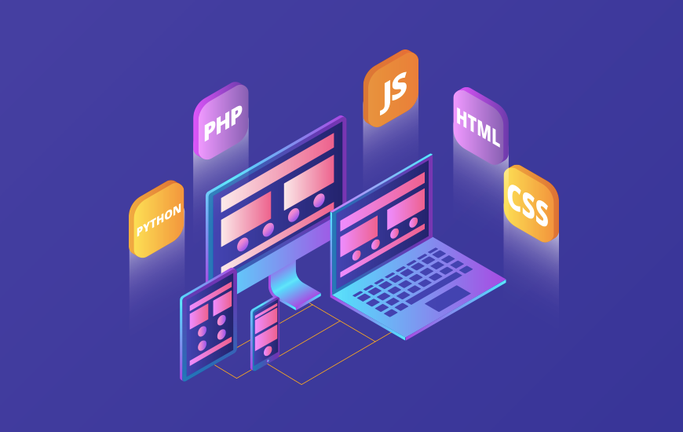
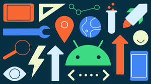

برنامه نویسی موبایل
صنعت نرم افزاری موبایل ، بسیار گسترده است و انتظار میرود در سال آینده ( 2020) هم رشد بسیاری داشته باشد . در حقیقت تحقیقات نشان میدهد ارزش صنعت نرم افزاری موبایل در سال 2020 به مقدار 188.9 بیلیون دلار خواهد رسید . با این رشد مطمئنا بازار کار برنامه نویسی موبایل بسیار پرسود خواهد بود . در این زمینه میتوانید در شرکت های برنامه نویسی موبایل استخدام شوید یا اپلیکیشن های شخصی خود را تولید کنید . برای شروع برنامه نویسی موبایل نیاز نیست حتما دانشگاه یا جای خاصی برای آموزش ثبت نام کنید و مدرک خاصی دریافت کنید ، البته این کار را میتوانید انجام دهید ولی هزینه و زمان اضافی از شما میگیرد .به همین دلایل است که ما آواسام را راه اندازی کردیم تا از هر مکانی بتوانید به راحتی از آموزش های آنلاین لذت ببرید و با استفاده از آموزش های برنامه نویسی موبایل آواسام بتوانید برنامه نویسی موبایل را یاد بگیرید .
برنامه نویسی ios
شما باید زبان های برنامه نویسی Objective-C و Swift را یاد بگیرید . اما دقیقا کدام یک را باید انتخاب کنید ؟ پاسخ به این سوال به این مورد بستگی داره که شما چرا برنامه نویسی iOS را میخواهید شروع کنید . اگر قصد شما از یادگیری برنامه نویسی iOS این است که محصول شخصی خود را تولید کنید swift گزینه ی بهتری خواهد بود . swift در سال 2014 معرفی شد و از آن زمان تا کنون بازخورد های مثبتی دریافت کرده است . ولی اگر قصد دارید برنامه نویسی iOS را با هدف استخدام شدن در شرکت های برنامه نویسی یاد بگیرید گزینه ی Objective-C گزینه ی بهتری خواهد بود . هزاران اپ iOS وجود دارد که با Objective-C ساخته شده است برای بروزرسانی و مدیریت آنها نیاز به برنامه نویس Objective-C است . شرکت اپل کتابخانه ی توسعه دهندگان iOS را فراهم کرده است که مستندات بسیار خوبی برای برنامه نویسان موبایل است . شما میتوانید آموزش ها و ویدیوهای بسیاری را پیدا کنید که به شما در برنامه نویسی iOS کمک خواهند کرد . با استفاده از این مستندات پیچیدگی یادگیری توسعه ی اپ های iOS به بخش های کوچک تقسیم میشود و شما به راحتی میتوانید انها را یاد بگیرید . در حقیقت بخش توسعه دهندگان iOS وبلاگ های آموزشی زیادی است .
برنامه نویسی android
برای برنامه نویسی و تولید اپلیکیشن های Android شما باید زبان های Java یا Kotlin را بلد باشید . برای افرادی که هیچ تجربه ای در این زمینه ندارند توصیه میشود ابتدا یک دوره برنامه نویسی جاوا برای اندروید را ببینند بعد شروع کنند . البته مستندات توسعه دهندگان گوگل هم مناسب یادگیری هست ولی برای افرادی که به انگلیسی تسلط دارند و حداقل قبلا تجربه ی برنامه نویسی داشته اند . قبل از اینکه شروع به تولید اپ برای Android بکنید باید این نکته را در نظر داشته باشید که در بازار موبایل ها و دستگاه های بسیار زیادی برای این سیستم عامل وجود دارد چون Android برخلاف iOS اوپن سورس است و شرکت های مختلف روی دستگاه های خود آنرا سازگار کرده اند از جمله موبایل های هوشمند انواع برند ها ، تبلت های مختلف و در نهایت دستگاه ها و اندروید باکس های زیادی هستند که از اندروید بهره میگیرند . طوری شده است که حتی تلویزیون های خانگی با سیستم عامل اندرویدی عرضه میشوند . اما جای نگرانی نیست بعد از درک مفاهیم گستردگی اندروید و سازگاری اپلیکیشن خود با دستگاه های مختلف شما بازار بزرگی از موبایل ها را در دست خواهید گرفت .
